CODING AGENTS AS PIXEL WORLD MODELS
traex/DeepSeek-V4.1-Flash · 0196
点击播放 · 原生 RGB 像素
逐轮保存的候选
回放视频、检查图与代码变化。
每份候选均可单独播放。实际图片检查记录在下方工具轨迹中。
候选 01播放与检查图
点击播放 · 原生 RGB 像素

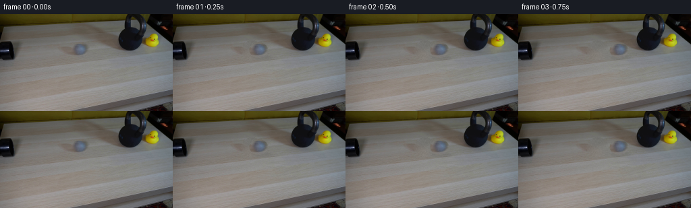
展开代码变化
--- 上一保存版本
+++ 本次保存版本
@@ -0,0 +1,158 @@
+from pathlib import Path
+
+import cv2
+import numpy as np
+from PIL import Image
+
+import artifact_io
+
+
+ROOT = Path(__file__).resolve().parent
+W, H, FPS, N_FRAMES = 256, 144, 4, 20
+
+
+def make_plate(first: np.ndarray) -> np.ndarray:
+ """Remove the original ball while retaining the photographed tabletop."""
+ mask = np.zeros((H, W), np.uint8)
+ cv2.ellipse(mask, (117, 53), (16, 14), 0, 0, 360, 255, -1)
+ plate = cv2.inpaint(first, mask, 8, cv2.INPAINT_TELEA)
+
+ # Put fine table grain back into the smoothly inpainted patch.
+ rng = np.random.default_rng(196)
+ grain = rng.normal(0.0, 1.7, (H, W, 1))
+ inside = mask > 0
+ plate[inside] = np.clip(
+ plate[inside].astype(np.float32) + grain[inside], 0, 255
+ ).astype(np.uint8)
+ return plate
+
+
+def make_ball_sprite(first: np.ndarray) -> tuple[np.ndarray, np.ndarray]:
+ """Cut the photographed ball with a feathered elliptical matte."""
+ cx, cy, rx, ry = 117.0, 53.0, 14.5, 12.0
+ x0, x1 = 100, 135
+ y0, y1 = 38, 69
+ yy, xx = np.mgrid[y0:y1, x0:x1]
+ rr = ((xx - cx) / rx) ** 2 + ((yy - cy) / ry) ** 2
+ alpha = np.clip((1.03 - rr) * 5.0, 0.0, 1.0)
+
+ sprite = first[y0:y1, x0:x1].astype(np.float32)
+ # Remove any table color that survives at the edge of the crop.
+ return sprite, alpha.astype(np.float32)
+
+
+def ball_pose(frame: int) -> tuple[float, float, float, float]:
+ """Return center x/y and horizontal/vertical scale for one frame."""
+ # Swift outbound roll, brief contact deformation, then a damped rebound.
+ xs = [
+ 117.0, 128.0, 139.0, 149.0, 157.0, 161.0,
+ 159.5, 153.0, 146.0, 138.0, 130.0, 123.0,
+ 117.0, 112.0, 109.0, 108.5, 109.0, 110.5, 112.0, 113.0,
+ ]
+ sx = sy = 1.0
+ if frame == 5:
+ sx, sy = 0.91, 1.045
+ elif frame == 6:
+ sx, sy = 0.85, 1.065
+ elif frame == 7:
+ sx, sy = 0.96, 1.02
+ return xs[frame], 53.0, sx, sy
+
+
+def warped_sprite(
+ sprite: np.ndarray, alpha: np.ndarray, sx: float, sy: float
+) -> tuple[np.ndarray, np.ndarray]:
+ if sx == 1.0 and sy == 1.0:
+ return sprite, alpha
+
+ sh, sw = sprite.shape[:2]
+ center = (sw * 0.5, sh * 0.5)
+ matrix = cv2.getRotationMatrix2D(center, 0.0, 1.0)
+ matrix[0, 0] = sx
+ matrix[1, 1] = sy
+ matrix[0, 2] += center[0] * (1.0 - sx)
+ matrix[1, 2] += center[1] * (1.0 - sy)
+ warped = cv2.warpAffine(
+ sprite, matrix, (sw, sh), flags=cv2.INTER_LINEAR,
+ borderMode=cv2.BORDER_REFLECT_101,
+ )
+ warped_alpha = cv2.warpAffine(
+ alpha, matrix, (sw, sh), flags=cv2.INTER_LINEAR,
+ borderMode=cv2.BORDER_CONSTANT, borderValue=0,
+ )
+ return warped, warped_alpha
+
+
+def composite_ball(
+ image: np.ndarray,
+ sprite: np.ndarray,
+ alpha: np.ndarray,
+ cx: float,
+ cy: float,
+) -> np.ndarray:
+ sh, sw = alpha.shape
+ left = int(round(cx - sw * 0.5))
+ top = int(round(cy - sh * 0.5))
+
+ out = image.astype(np.float32)
+
+ # A soft contact shadow keeps the moving ball seated on the table.
+ shadow = np.zeros((H, W), np.float32)
+ cv2.ellipse(
+ shadow, (int(round(cx + 3)), int(round(cy + 11))),
+ (15, 3), 0, 0, 360, 1.0, -1,
+ )
+ shadow = cv2.GaussianBlur(shadow, (0, 0), 2.0)
+ out *= (1.0 - 0.07 * shadow[..., None])
+
+ x0, y0 = max(0, left), max(0, top)
+ x1, y1 = min(W, left + sw), min(H, top + sh)
+ sx0, sy0 = x0 - left, y0 - top
+ sx1, sy1 = sx0 + (x1 - x0), sy0 + (y1 - y0)
+ a = alpha[sy0:sy1, sx0:sx1, None]
+ out[y0:y1, x0:x1] = (
+ sprite[sy0:sy1, sx0:sx1] * a
+ + out[y0:y1, x0:x1] * (1.0 - a)
+ )
+ return np.clip(out, 0, 255).astype(np.uint8)
+
+
+def add_contact_light(frame: np.ndarray, amount: float) -> np.ndarray:
+ if amount <= 0:
+ return frame
+ yy, xx = np.mgrid[0:H, 0:W]
+ glow = np.exp(-(((xx - 174.0) / 5.0) ** 2 + ((yy - 51.0) / 8.0) ** 2))
+ out = frame.astype(np.float32)
+ out += glow[..., None] * np.array([5.0, 5.0, 4.0]) * amount
+ return np.clip(out, 0, 255).astype(np.uint8)
+
+
+def generate() -> np.ndarray:
+ first = np.asarray(Image.open(ROOT / "first_frame.png").convert("RGB"))
+ assert first.shape == (H, W, 3)
+
+ plate_bgr = make_plate(cv2.cvtColor(first, cv2.COLOR_RGB2BGR))
+ sprite_bgr, alpha = make_ball_sprite(cv2.cvtColor(first, cv2.COLOR_RGB2BGR))
+
+ frames = []
+ for index in range(N_FRAMES):
+ if index == 0:
+ frames.append(first.copy())
+ continue
+
+ cx, cy, sx, sy = ball_pose(index)
+ sprite, warped_alpha = warped_sprite(sprite_bgr, alpha, sx, sy)
+ frame_bgr = composite_ball(plate_bgr, sprite, warped_alpha, cx, cy)
+ frame_rgb = cv2.cvtColor(frame_bgr, cv2.COLOR_BGR2RGB)
+
+ contact = {5: 1.0, 6: 0.55}.get(index, 0.0)
+ frames.append(add_contact_light(frame_rgb, contact))
+
+ result = np.stack(frames).astype(np.uint8)
+ assert result.shape == (N_FRAMES, H, W, 3)
+ assert np.array_equal(result[0], first)
+ return result
+
+
+if __name__ == "__main__":
+ artifact_io.save(generate(), ROOT)
候选 02播放与检查图
点击播放 · 原生 RGB 像素
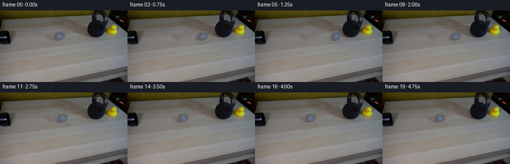
展开代码变化
--- 上一保存版本
+++ 本次保存版本
@@ -83,6 +83,33 @@
return warped, warped_alpha
+def motion_blur(
+ sprite: np.ndarray, alpha: np.ndarray, direction: float, length: float
+) -> tuple[np.ndarray, np.ndarray]:
+ if length < 0.2:
+ return sprite, alpha
+
+ sh, sw = alpha.shape
+ steps = max(3, int(np.ceil(length)) + 1)
+ premultiplied = sprite * alpha[..., None]
+ color_acc = np.zeros_like(premultiplied)
+ alpha_acc = np.zeros_like(alpha)
+ for offset in np.linspace(-0.5 * length, 0.5 * length, steps):
+ matrix = np.float32([[1, 0, direction * offset], [0, 1, 0]])
+ color_acc += cv2.warpAffine(
+ premultiplied, matrix, (sw, sh),
+ flags=cv2.INTER_LINEAR, borderMode=cv2.BORDER_CONSTANT,
+ )
+ alpha_acc += cv2.warpAffine(
+ alpha, matrix, (sw, sh),
+ flags=cv2.INTER_LINEAR, borderMode=cv2.BORDER_CONSTANT,
+ )
+ color_acc /= steps
+ alpha_acc /= steps
+ smooth_color = color_acc / np.maximum(alpha_acc[..., None], 1e-4)
+ return smooth_color, alpha_acc
+
+
def composite_ball(
image: np.ndarray,
sprite: np.ndarray,
@@ -142,6 +169,10 @@
cx, cy, sx, sy = ball_pose(index)
sprite, warped_alpha = warped_sprite(sprite_bgr, alpha, sx, sy)
+ if index <= 4:
+ sprite, warped_alpha = motion_blur(sprite, warped_alpha, 1.0, 4.0)
+ elif 7 <= index <= 11:
+ sprite, warped_alpha = motion_blur(sprite, warped_alpha, -1.0, 3.0)
frame_bgr = composite_ball(plate_bgr, sprite, warped_alpha, cx, cy)
frame_rgb = cv2.cvtColor(frame_bgr, cv2.COLOR_BGR2RGB)
可观测工具轨迹
实际执行的命令与返回图片。
命令 1exit 0
/bin/bash -c "pwd && rg --files -g 'prompt.txt' -g 'GENERATION_RULES.md' -g '"'!**/.git/**'"'"
命令 2exit 0
/bin/bash -c "sed -n '1,240p' prompt.txt"
命令 3exit 0
/bin/bash -c "sed -n '1,280p' GENERATION_RULES.md"
命令 4exit 0
/bin/bash -c "find . -maxdepth 2 -type f -printf '%p %s bytes\\n' | sort"
命令 5exit 0
/bin/bash -c "sed -n '1,260p' artifact_io.py"
命令 6exit 0
/bin/bash -c "python - <<'PY' import importlib.util for n in ['cv2','numpy','PIL','scipy','skimage','imageio']: print(n, bool(importlib.util.find_spec(n))) PY"
命令 7exit 0
/bin/bash -c "python - <<'PY'
from PIL import Image
im=Image.open('first_frame.png')
print(im.size, im.mode)
PY"命令 8exit 0
/bin/bash -c "python - <<'PY'
from PIL import Image
im=Image.open('first_frame.png')
for name,box in {'ball':(95,35,145,75),'pipe':(0,30,45,80),'bell':(160,0,235,70),'duck':(210,15,245,55)}.items():
im.crop(box).resize(((box[2]-box[0])*6,(box[3]-box[1])*6)).save('.tmp/'+name+'.png')
PY"命令 9exit 0
/bin/bash -c "python - <<'PY'
import cv2, numpy as np
im=cv2.imread('first_frame.png')
g=cv2.cvtColor(im,cv2.COLOR_BGR2GRAY)
for y in range(40,76,2):
row=g[y,95:145]
print(y, row.min(), row.max(), np.round(row[::5],0).astype(int).tolist())
PY"命令 10exit 0
/bin/bash -c "python - <<'PY'
import cv2
im=cv2.imread('first_frame.png')
for x in range(95,146,5):
col=cv2.cvtColor(im[:,x:x+1],cv2.COLOR_BGR2GRAY)[:,0]
print(x, col[38:70].tolist())
PY"命令 11exit 0
/bin/bash -c "python - <<'PY'
import cv2, numpy as np
im=cv2.imread('first_frame.png')
g=cv2.cvtColor(im,cv2.COLOR_BGR2GRAY)
# ball segmentation local bg via strong blur
bg=cv2.GaussianBlur(g,(0,0),8)
d=bg.astype(int)-g
mask=(d[25:80,90:150]>5).astype(np.uint8)
ys,xs=np.where(mask)
print(xs.min()+90,xs.max()+90,ys.min()+25,ys.max()+25)
# sample ball color on mask
pix=im[25:80,90:150][mask.astype(bool)]
print('bgr mean',pix.mean(0),'std',pix.std(0))
# pipe dark mask
for x in [0,2,4,6,8,10,12,14,16,18,20,22,24]:
print(x, g[30:80,x].min(), np.argmin(g[30:80,x])+30)
PY"命令 12exit 0
/bin/bash -c "python - <<'PY'
from PIL import Image
im=Image.open('first_frame.png')
for i,box in enumerate([(75,30,160,85),(145,0,230,80),(0,30,35,80)]):
im.crop(box).resize(((box[2]-box[0])*8,(box[3]-box[1])*8)).save(f'.tmp/z{i}.png')
PY"命令 13exit 0
/bin/bash -c "python - <<'PY'
import cv2,numpy as np
im=cv2.imread('first_frame.png')
g=cv2.cvtColor(im,cv2.COLOR_BGR2GRAY)
for th in [90,95,100,105,110]:
m=(g[30:80,85:160]<th).astype(np.uint8)
n,lab,stats,cen=cv2.connectedComponentsWithStats(m)
print(th, sorted([(int(s[4]),tuple(np.round(c,1))) for s,c in zip(stats[1:],cen[1:])], reverse=True)[:5])
PY"命令 14exit 1
/bin/bash -c "python - <<'PY'
import cv2,numpy as np
im=cv2.imread('first_frame.png')
g=cv2.cvtColor(im,cv2.COLOR_BGR2GRAY)
# print ascii 85:140 x 32:72 threshold 112
for y in range(30,73,2):
s=''
for x in range(80,155,2):
v=g[y:y+2,x:x+2].mean()
s += ' #'[v<108]
print(f'{y:3}',s)
PY"命令 15exit 0
/bin/bash -c "python - <<'PY'
import cv2,numpy as np
im=cv2.imread('first_frame.png')
g=cv2.cvtColor(im,cv2.COLOR_BGR2GRAY)
for y in range(30,73,2):
s=''
for x in range(80,155,2):
v=g[y:y+2,x:x+2].mean()
s += '#' if v<108 else ('+' if v<116 else '.')
print(f'{y:3}',s)
PY"命令 16exit 0
/bin/bash -c "python - <<'PY'
import cv2,numpy as np
im=cv2.imread('first_frame.png')
g=cv2.cvtColor(im,cv2.COLOR_BGR2GRAY)
bg=cv2.GaussianBlur(g,(0,0),10)
d=bg.astype(float)-g
# region 95-140,40-65
for y in range(36,68):
s=''
for x in range(92,142):
v=d[y,x]
s += '#' if v>10 else ('+' if v>5 else '.')
print(f'{y:3}',s)
PY"命令 17exit 0
/bin/bash -c "python - <<'PY'
import cv2,numpy as np
im=cv2.imread('first_frame.png')
g=cv2.cvtColor(im,cv2.COLOR_BGR2GRAY)
for y in [35,40,45,50,55,60,65,70]:
print(y, [(x,int(g[y,x])) for x in range(155,181,2)])
PY"命令 18exit 0
/bin/bash -c "python - <<'PY'
import cv2, numpy as np
im=cv2.imread('first_frame.png')
mask=np.zeros(im.shape[:2],np.uint8)
cv2.ellipse(mask,(117,53),(15,14),0,0,360,255,-1)
clean=cv2.inpaint(im,mask,5,cv2.INPAINT_TELEA)
cv2.imwrite('.tmp/clean.png',clean)
cv2.imwrite('.tmp/mask.png',mask)
# show before/after enlarged
cv2.imwrite('.tmp/clean_crop.png',cv2.resize(clean[35:75,90:145],None,fx=8,fy=8,interpolation=cv2.INTER_NEAREST))
PY"命令 19exit 0
/bin/bash -c "python - <<'PY'
import cv2,numpy as np
im=cv2.imread('first_frame.png')
mask=np.zeros(im.shape[:2],np.uint8)
cv2.circle(mask,(117,53),14,255,-1)
# dilate a bit for antialiased fringe
mask=cv2.dilate(mask,np.ones((3,3),np.uint8),iterations=1)
clean=cv2.inpaint(im,mask,7,cv2.INPAINT_NS)
cv2.imwrite('.tmp/clean.png',clean)
cv2.imwrite('.tmp/clean_crop.png',cv2.resize(clean[35:75,90:145],None,fx=8,fy=8,interpolation=cv2.INTER_NEAREST))
# compare mask pixels
print('diff',np.abs(clean.astype(int)-im.astype(int))[mask>0].mean())
PY"命令 20exit 0
/bin/bash -c "python - <<'PY'
import cv2,numpy as np
im=cv2.imread('first_frame.png')
# median background constructed from nearby vertical bands to avoid over-smearing grain
mask=np.zeros(im.shape[:2],np.uint8)
cv2.circle(mask,(117,53),16,255,-1)
# inpaint only, blend texture residual from shifted surrounding region
clean=cv2.inpaint(im,mask,9,cv2.INPAINT_TELEA)
# Add deterministic noise inside to match plate grain
rng=np.random.default_rng(3)
noise=rng.normal(0,2.4,(im.shape[0],im.shape[1],1))
inside=mask>0
clean[inside]=np.clip(clean[inside].astype(float)+noise[inside],0,255).astype(np.uint8)
cv2.imwrite('.tmp/clean.png',clean)
cv2.imwrite('.tmp/clean_crop.png',cv2.resize(clean[35:75,90:145],None,fx=8,fy=8,interpolation=cv2.INTER_NEAREST))
PY"命令 21exit 0
/bin/bash -c "python - <<'PY'
import cv2,numpy as np
im=cv2.imread('first_frame.png')
# measure dark pipe extent and endpoint
for y in range(40,70,2):
xs=np.where(cv2.cvtColor(im,cv2.COLOR_BGR2GRAY)[y,:50]<50)[0]
if len(xs): print(y,xs.min(),xs.max())
PY"命令 22exit 0
/bin/bash -c "python - <<'PY'
import cv2,numpy as np
im=cv2.imread('first_frame.png')
g=cv2.cvtColor(im,cv2.COLOR_BGR2GRAY)
# estimate surface center and bounds visually: region y44-61 x104-132. background from x 95:104 and 132:141
for y in range(43,62):
bgx=np.r_[np.arange(94,105),np.arange(131,143)]
# interpolate left right mean
vals=[]
for x in range(100,137):
if x<107: v=g[y,93:106].mean()
elif x>127: v=g[y,129:142].mean()
else:
# bilinear between boundaries
a=g[y,93:106].mean(); b=g[y,129:142].mean(); v=a+(b-a)*(x-100)/30
vals.append(int(g[y,x]-v))
print(y, ' '.join(f'{v:+3d}' for v in vals))
PY"命令 23exit 1
/bin/bash -c 'python generate.py'
命令 24exit 0
/bin/bash -c 'python generate.py'
命令 25exit 0
/bin/bash -c "python - <<'PY'
from PIL import Image
ims=[Image.open(f'frames/{i:02d}.png') for i in range(20)]
w,h=256,144
sheet=Image.new('RGB',(w*5,h*4))
for i,im in enumerate(ims): sheet.paste(im,((i%5)*w,(i//5)*h))
sheet.resize((w*5*2,h*4*2)).save('.tmp/all2x.png')
PY"命令 26exit 0
/bin/bash -c "python - <<'PY'
from PIL import Image
for i in [1,2,3,4,5,6,7,8,10,12,15,19]:
im=Image.open(f'frames/{i:02d}.png').crop((80,30,190,80)).resize((660,300))
im.save(f'.tmp/f{i:02d}.png')
PY"命令 27exit 0
/bin/bash -c "python - <<'PY'
from PIL import Image
im=Image.open('first_frame.png')
# print color samples in ball core and plate
for p in [(117,53),(117,50),(117,58),(112,52),(122,52),(108,52),(127,52)]:
print(p,im.getpixel(p))
PY"命令 28exit 0
/bin/bash -c "python - <<'PY'
from PIL import Image
im=Image.open('first_frame.png')
# best-fit bounding analysis via local color distance, print patch
for y in range(40,64):
s=''
for x in range(102,134):
r,g,b=im.getpixel((x,y)); lum=(r+g+b)/3
s += '#' if lum<108 else ('+' if lum<116 else '.')
print(y,s)
PY"命令 29exit 0
/bin/bash -c 'python generate.py'
命令 30exit 0
/bin/bash -c "python - <<'PY'
from PIL import Image
for i in [1,2,3,4,5,6,7,8,10,12,16,19]:
im=Image.open(f'frames/{i:02d}.png').crop((80,30,190,80)).resize((660,300))
im.save(f'.tmp/g{i:02d}.png')
PY"命令 31exit 0
/bin/bash -c "python - <<'PY'
import numpy as np
from PIL import Image
first=np.array(Image.open('first_frame.png'))
out=np.array(Image.open('frames/00.png'))
print('frame0 identical:',np.array_equal(first,out),'maxdiff:',np.abs(first.astype(int)-out.astype(int)).max())
print('pixels changed per frame:',[(np.count_nonzero(np.any(out[i]"'!=first,axis=2)),i) for i in range(20)])
PY'命令 32exit 0
/bin/bash -c "python - <<'PY'
import json,numpy as np
from PIL import Image
p=np.load('pixels.npz')['pixels']
print('pixels',p.shape,p.dtype)
print('frames',len(__import__('glob').glob('frames/*.png')))
print('sizes',sorted(set(Image.open(f'frames/{i:02d}.png').size for i in range(20))))
print('index bytes',__import__('os').path.getsize('index.html'))
PY"命令 33exit 0
/bin/bash -c 'git status --short 2>/dev/null || true'
视觉工具实际返回图片 1
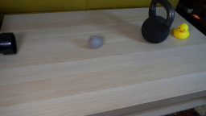
视觉工具实际返回图片 2
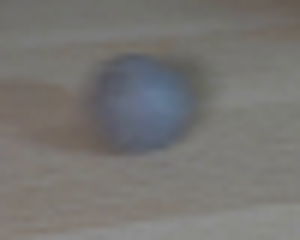
视觉工具实际返回图片 3
视觉工具实际返回图片 4
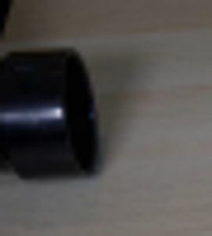
视觉工具实际返回图片 5
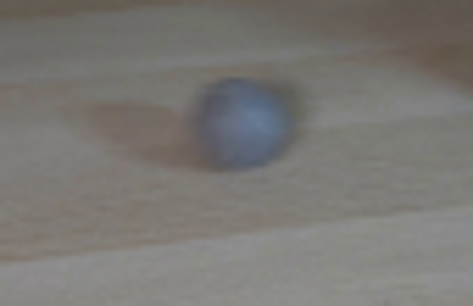
视觉工具实际返回图片 6
视觉工具实际返回图片 7
视觉工具实际返回图片 8
视觉工具实际返回图片 9
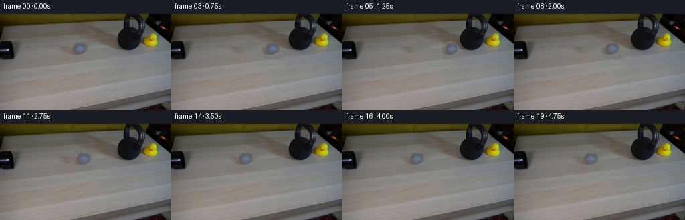
视觉工具实际返回图片 10
视觉工具实际返回图片 11
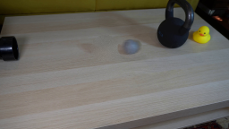
视觉工具实际返回图片 12
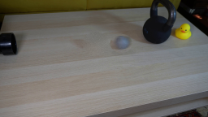
视觉工具实际返回图片 13
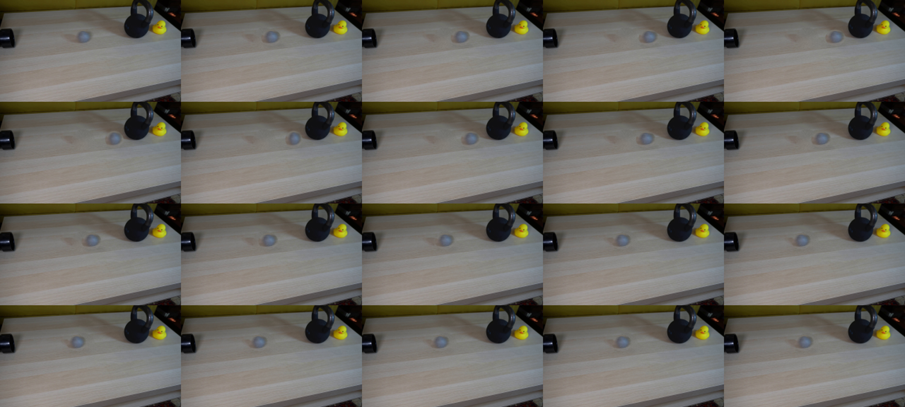
视觉工具实际返回图片 14
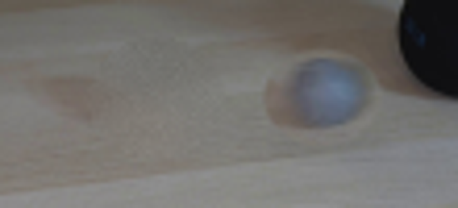
视觉工具实际返回图片 15
视觉工具实际返回图片 16
视觉工具实际返回图片 17
视觉工具实际返回图片 18
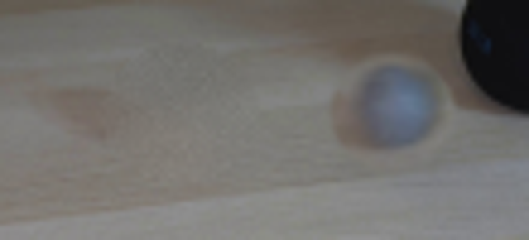
视觉工具实际返回图片 19
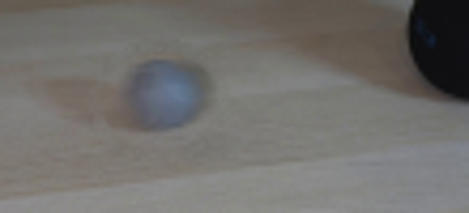
视觉工具实际返回图片 20

视觉工具实际返回图片 21
视觉工具实际返回图片 22
视觉工具实际返回图片 23
视觉工具实际返回图片 24
保存候选 2 份；完成命令 33 次；可验证图片返回 24 张。原始 API 响应与完整日志保留在本地。